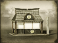

Ishin Shishi
In Fall of the Samurai ishin shishi are Imperialist activists whose mission is to wrestle power from the Shogunate and restore it to the Emperor. They are expert propagandists who can rally a population or persuade an enemy army to support the emperor, uncover enemy agents on friendly territory, instil Imperial fervour in friendly armies, incite revolt in an enemy province or assassinate a general or another agent. If placed in a friendly settlement ishin shishi improve pro-Imperial allegiance and the effectiveness of counter-spying simply by their presence. They are recruited via the propaganda building chain. Ishin shishi are especially effective against shinobi and foreign veterans.
Recruitment Cost 500
Requires
-
Buildings:
- 